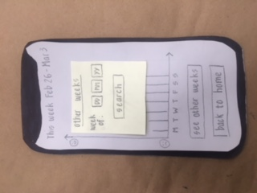

Paper Prototype 1
Before: For our prototype we decided to depict exactly how a user would interact with our interface. The starting page would have a login with the logo as well as an option to make an account. For the second screen we have the speech recognition. Here, users are able to talk and journal their feelings. This page acts as an outlet in order to de-stress and have a place where they can express their emotions without the discomfort of strangers like therapists. The third screen shows a bar chart for the progression or process that each user has logged on the “How do you feel?” section. Users are able to click on a certain facial expression that represents their mood. This is able to be tracked over a period of time so the user is able to see and track how they are doing. We also planned to have a look and feel of cooler or pastel colors that are helpful in stressful situations.

Paper Prototype 2
After: After talking with other groups, we received feedback on the mood options as well as adding a playlist. We decided to add a calming playlist, which would be linked to Spotify. This way, when a person is in a state of anxiety or stress, listening to calming music will be a way of self therapy and calming down.